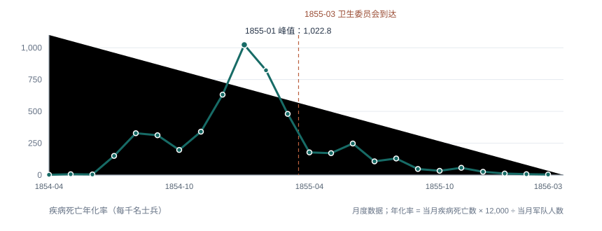
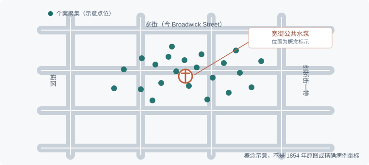
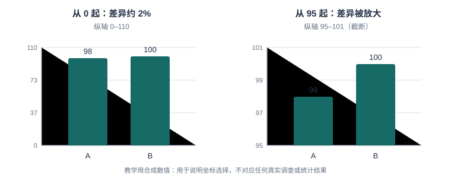

第 5 章 数据可视化与视觉修辞
学习目标：完成本章后，你应能
（1）区分描述性图表与叙事性可视化；
（2）说出视觉修辞的三要素（路径/视角/色彩）；
（3）用 pandas/matplotlib 画一张"有标注、可解释"的人文图；
（4）识别至少三种常见的可视化误导手法。
5.0 思政导入
思政融入（课程思政）：可视化是“讲好中国故事”的有力语言。一张诚实而克制的历史图表，能让世界看见真实的中国变迁；反之，被操控的图会扭曲认知。你笔下的每一幅图，都关乎中国叙事的真实性——用可视化的力量呈现中华文明的连续与包容，拒绝误导与偏见。
思政案例（课程思政示范案例 / AI 思政课 知识库）：可参照“人工智能赋能大思政课”（宫长瑞）“内容为王，技术为用”的原则——图首先要真实、有立场，技术只是呈现的工具。
5.1 图从来不是中立的
一张图选了什么、省略了什么、用什么尺度，都在替观众做判断。人文图表尤其要警惕：把千年的变迁画成一条平滑上升线，本身就在讲述一个"进步叙事"。因此，读图不能止于"数值是多少"，还要追问：谁采集了数据？什么被计入或排除？分母、分类和时间边界是谁决定的？可视化是论证，不是装饰。
真实案例：弗洛伦斯·南丁格尔的克里米亚战争图表。南丁格尔在 1858 年出版的报告中，用极区面积图（常称玫瑰图或 Coxcomb 图）比较英军因疾病、伤口及其他原因死亡的情况。图表让读者看到，疾病死亡远多于战伤死亡；但它同时依赖特定的分类和口径：疾病被归为可预防或可缓解的疾病，死亡率按军队人数年化。今天重画时，应保留这个口径说明，也不应把卫生改革后的下降仅凭时间先后归因于单一措施。
下面用公开数据按"当月疾病死亡数 ÷ 当月军队人数 × 12,000"重新绘制疾病死亡年化率。这是便于读趋势的折线重绘，不是南丁格尔原始极区图；读者可以直接比较两种图形各自强调了什么。

历史图表还提醒我们，图表的说服力不等于结论自动成立。图能让模式变得可见，却不能替代对数据来源、替代解释和历史语境的核查。
理论5.2 基础图表：折线、柱状、地图、网络
- 折线图：横轴有序、通常是时间，适合查看趋势、季节性和转折；不要把缺失年份直接连成连续事实。
- 柱状图：比较类别或时点的数量、比例；柱长表达数值，通常应从 0 起。类别没有自然顺序时，按数值排序比按字母排序更易读。
- 地图：呈现位置、邻近和空间差异；人口规模不同的地区不能只比较总数，应考虑率、面积或人口分母，并交代投影、边界和地理数据年份。
- 网络图：呈现人物、机构、作品之间的关系；节点大小、边粗细和布局算法都可能改变读者对"重要性"和"中心"的理解，需说明关系定义与布局含义。
真实案例：约翰·斯诺的宽街霍乱地图。1854 年伦敦 Soho 霍乱暴发期间，斯诺把死亡地点画在街区地图上，病例聚集与宽街公共水泵的空间邻近关系因此变得醒目。原图以地址旁的短线表示死亡人数。这个案例说明地图能把"地点关系"变成可检查的证据，但邻近本身不等于因果；还要核对供水、居民行为、工作场所和其他可能解释。UCLA 的历史回顾也专门提醒读者，不要把这张图简化为"只看地图就发现病因"的传奇。

pandas 一行 df.plot() 即可出图，但"出图"离"说清"还差一步：先确定问题和观测单位，再选图形、标注数据口径，最后检查读者是否能从图上得到你声称的结论。若只想比较不同类别，用柱状图通常比装饰性更强的三维饼图更清楚。
5.3 叙事可视化与 framing
Narrative Visualization（叙事可视化）把图表、文字、注释和交互组织成有顺序的解释。一个可复用的结构是：总览问题 → 聚焦关键模式 → 给出背景与反例 → 回到证据边界。framing（框定）决定观众先看什么、哪些比较被放在一起，以及什么被视为"异常"。先给总体趋势再放大局部，与先抛出一个极端个案再补总体背景，带来的结论感完全不同。
继续看斯诺案例：宽街地图很好地呈现了死亡地点的聚集，但 UCLA 的史料回顾指出，斯诺在绘制地图前已经提出并检验过水传播假说；地图是论证链中的一项证据，而不是单独"触发"发现的魔法瞬间。若把故事讲成"斯诺看见地图，立即找到病因"，就省略了调查、比较和反例，也把复杂的公共卫生史压成英雄叙事。叙事可以引导，但应让观众分清观察到什么、作者如何解释、还缺什么证据。
设计讲解型图表时，可给每个注释一个任务：解释数据中的变化、说明背景事件，或指出解释的不确定性。交互高亮应能撤销或恢复总览；不要只允许观众沿着作者预设的单一路径前进。相关理论讨论可参看 Hullman 与 Diakopoulos 关于叙事可视化框定效应的研究。
理论5.4 视觉修辞三要素：路径、视角、色彩
- 路径（Path）：标题、排序、留白、标注和交互共同构成阅读顺序。可先给全貌，再用注释指向关键月份；不要让装饰性动画抢在证据之前。
- 视角（Viewpoint）：说明谁在观察、比较谁与谁、以什么问题组织材料。呈现战争死亡时，可以从军队管理者的统计转到士兵及其家属的经验；视角变化会改变需要收集的数据，不只是换一个镜头。
- 色彩（Color）：颜色既是编码，也是文化信号。红色可能被读作警告，也可能表示庆典或传统；冷暖色并非跨文化通用的价值标签。先给颜色明确的数据含义，再用色盲友好、对比度足够的配色；不要只靠颜色区分系列。
修辞也包含情感诉求（pathos），但情感不应被误当作"视角"本身：有感染力的叙事仍须忠于证据。以南丁格尔图为例，醒目的色块让疾病死亡不再被战伤叙事遮蔽；若改用深浅色表示不同死因，应在图例中解释类别，并在灰度或色觉模拟下检查是否仍可区分。
| 设计选择 | 可能带来的阅读效果 | 应向读者交代 |
|---|---|---|
| 先呈现总览，再高亮峰值 | 先建立基线，再注意异常 | 峰值是绝对数量还是率 |
| 用颜色区分死因 | 快速辨认不同类别 | 类别定义、色彩映射和可访问性 |
| 将地图中心放在某个地点 | 暗示其重要或接近事件中心 | 投影、比例尺、地点选择依据 |
5.5 人文图表的设计准则
- 先定义比较对象：写清观测单位、时间范围、指标、分母和分类规则。南丁格尔数据既有死亡人数，也可按当月军队人数换算年化率；军队规模随月份变化时，只画死亡总数可能造成不公平比较。
- 标注而不代替读者下结论：指出关键拐点及相关史实，并把"同时发生"与"导致"分开写。注释应链接到来源，不能把未经核查的解释写成图表事实。
- 减少装饰，保留必要上下文：删去无助于比较的三维效果、阴影和过多网格线；保留标题、单位、图例、来源、时间范围及必要的注释。
- 呈现资料的局限与不确定性：史料可能存在漏报、分类变化、覆盖范围不全或估计误差。只有在有可解释的区间或误差依据时才画误差线/阴影带；没有量化依据时，应用文字说明限制，不能凭空画出"置信区间"。
- 照顾不同读者：字号可读；颜色与背景有足够对比；图形不单靠红绿区分；同时提供文本说明或数据表，方便屏幕阅读器及无法辨色的读者。
发布前做一次"图表体检"：请同伴只看标题、图例和图形，复述他们认为图在说什么；若复述与研究问题不一致，就调整标题、标注或编码，而不是增加更多装饰。
理论5.6 伦理坐标：误导与操控的红线（本章核心能力）
- 截断轴：柱长直接编码数值，纵轴不从 0 起会夸大差异。折线图有时为看清波动而使用非零起点，但必须明确标刻度、说明截取范围；不可把柱状图的长度比较伪装成完整量级。
- 双轴与尺度操纵：两个量纲不同的序列即使看似同步，也不代表相关或因果。双轴会让人通过调整刻度制造"走势吻合"；优先分面展示，或先解释为何要对齐尺度。
- 因果暗示：相关、先后顺序或地图邻近都不足以单独证明因果。交代研究设计、替代解释和证据限制；斯诺地图是调查证据之一，不是空间聚集自动证明水源传播的因果实验。
- 选择性呈现：只挑选有利年份、地区或群体；省略缺失值、样本变化和不确定性。说明筛选规则，并尽可能提供完整时间范围或可下载数据。

读图核查清单：标题是否与指标相符？单位、分母和时间范围是否明确？纵轴是否完整、截断是否显著标示？是否漏掉不利样本、缺失月份或重要背景？图表暗示的因果是否有研究设计支撑？来源和可复现数据是否能找到？
一条红线：不为"让结论更震撼"而改动坐标轴、省略不利数据或暗示因果。图是论证，造假图等于造假论证。
5.7 综合实践：设计并审视数据可视化
任务一：绘制一张有标注的人文图
小练习 5.1（视觉修辞）：用第3章清洗好的 CSV，画一张折线或柱状图，要求：① 纵轴从 0 起；② 至少一个拐点配一句文字标注；③ 用色彩区分两组但说明色板含义；④ 在图下写一段"我想让观众先看到什么"。本章 V2.2 的《事件驱动的数据可视化交互设计：基于"数据叙事"的探索和实践》提供"数据叙事"的设计思路，可对照检查你的叙事顺序是否合理。
任务二：用同一数据呈现两种不同叙事
- 目标：体会可视化的 framing——同一份数据，换坐标轴 / 口径能讲相反故事。
- 步骤：
- 取一份含对比的数据（如各省档案开放数量）；
- 画 A 图突出“差距在拉大”；
- 画 B 图突出“整体在提升”；
- 标出你各自改了哪三个视觉参数；
- 写反思：哪种更诚实。
- 工具：matplotlib 或任意绘图工具。
- 产出：A、B 两图 + 参数清单 + 反思。
- 评价量规：两图可运行（30%）、参数标注清楚（30%）、伦理反思到位（40%）。
5.8 本章小结与思考
带走三件事：图非中立（可视化是论证）、修辞三要素（路径/视角/色彩）、误导红线（截断轴/双轴/因果暗示/选择性呈现）。好的人文图表，让人"看见"也让人"质疑"。
思考题
- 找一张你领域里"看似专业"的图，用 5.6 的红线检查它有没有误导手法？
- "色彩即立场"——如果你用红色表示"衰落"、绿色表示"兴盛"，这背后藏着什么价值观预设？
- 叙事可视化引导视线，会不会剥夺观众自己发现的能力？如何在"引导"与"留白"间平衡？
5.9 学术前沿与延伸阅读
下表为通过 OpenAlex（开放学术图谱，聚合期刊/会议/预印本）、DBLP（CS 会议期刊，含 SIGIR/UIST/DH/IJDAR/EPIA）、arXiv（预印本）、CrossRef（期刊 DOI 元数据）、CORE（开放获取库）检索到的真实文献，按来源/被引排序，供延伸阅读与实验报告引用。
课堂复现（检索即方法）：下列代码直接调用 OpenAlex 免费 API 复现本章文献检索（无需密钥）。
import urllib.request, urllib.parse, json
q = 'data science digital humanities'
url = 'https://api.openalex.org/works?search=' + urllib.parse.quote(q) + '&per_page=10&sort=cited_by_count:desc'
oa = json.loads(urllib.request.urlopen(url, timeout=30).read())
for w in oa['results']:
print(w['publication_year'], w['title'], '->', (w.get('primary_location') or {}).get('source', {}).get('display_name'))误用警示：① arXiv 预印本未经同行评审，引用须标 preprint 并追正式版；② 被引数代表影响力非结论正确；③ 商业库（WoS/Scopus/Elsevier/JSTOR/CNKI）本环境无订阅，需机构账号获取后再并入。
与实验衔接：将任一方法对照本章实验改写数据集或提示词，即可形成有学术依据的结题报告。
第5章·中文核心期刊文献实证（V2.2·19 种图情档核心期刊）
下表论文来自 19 种中文图情档核心期刊（中国图书馆学报、情报学报、情报资料工作、档案学通讯、大学图书馆学报、图书情报工作、数据分析与知识发现、情报杂志、情报理论与实践、图书与情报、档案学研究、图书馆杂志、图书情报知识、图书馆论坛、图书馆学研究、图书馆建设、情报科学、现代情报、信息资源管理学报），经 Web 检索（期刊官网 / CNKI 索引 / DOI 溯源）按主题核实得到真实文献（含 DOI/链接）。
| 来源期刊 | 年份 | 标题（链接） | 作者 |
|---|---|---|---|
| 中国图书馆学报 | 2023 | 事件驱动的数据可视化交互设计:基于"数据叙事"的探索和实践 | 铁钟, 夏翠娟, 黄薇, 朱永宁, 刘梦悦 |
课堂复现（中文文献检索）：这些期刊正式全文多见于 CNKI/万方/维普（本环境无订阅）。可在机构网络以「期刊名 + 主题词」检索，导出 BibTeX/RIS 后交我并入；DOI 可在 https://doi.org/<DOI> 溯源摘要。
误用警示：① 引用以期刊正式版本为准（年/卷/期/页）；② 回到原文核对方法与数据；③ 与本节实验的映射是"启发"而非"背书"。
与实验衔接：将上表任一中文方法（如中文知识图谱、机器学习人文应用）对照本章实验改写，即可形成有本土学术依据的结题报告。
本章配套游戏：修辞法庭